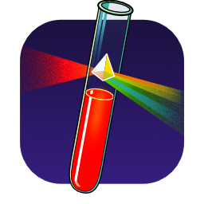

Test Reflector
Monitor GitHub Actions directly from your menubar. Test Reflector provides a concise overview of recent results, allowing you to jump directly to test failures.
Without an in-app subscription, it watches up to three public repos. With a valid in-app subscription, authentication tokens may be added, allowing Test Reflector to watch private repos and check more often.
- Watches the CI status of public and private repos in GitHub.
- Conservatively allocates requests to ensure that GitHub's API request limits are never exceeded.

Future Plans
- Other devices: phones, watches, tvs, headsets
- Multi-computer coordination
- Team licenses
Feedback
Whether your experience is good or bad—or even if you just wish things worked a little differently—please let us know.